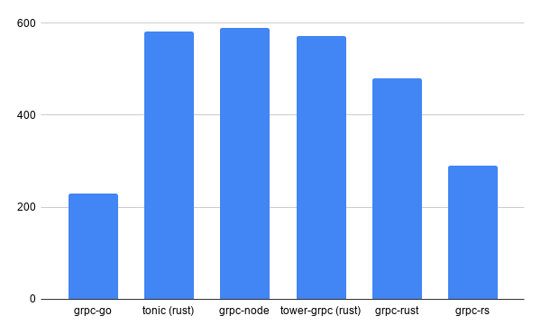

对 gRPC 的 Rust 和 Go 版本进行基准测试
背景
如果你计划构建可靠，内存安全 ，高性能的应用程序，那么 Rust＆Go 无疑会是你的选择。
如果您希望从内部应用程序中获得更高的性能，则可能还需要考虑使用 gRPC 而不是普通的 REST API。所有这些都是减少您的计算开销的解决方案。
我尝试比较各种库以了解它们的性能，并希望对你有所帮助。
关注的库
-
tower-grpc (Rust)
高性能 rust 库，尽管已被 tonic 替代
-
grpc-go (Golang)
grpc 的官方 Go 模块
-
grpc-rust (Rust)
仍在开发中，另一个 rust grpc 库。看起来很不错
-
tonic (Rust)
tower-grpc 库的改进更新，支持新的 await 语法
-
grpc-node (NodeJs)
包含有基准基准点
-
grpc-rs (Rust — C bindings)
使用 grpc 的 rust 库
基准测试工具
对于基准测试，我将在 gRPC 中使用与 Hey 等效的 ghz 。
该测试将重点关注如果使用上述每个库将 10,000 个并发请求的相同负载发送到服务器，将有多少开销。我将为每个使用相同的 helloworld greeter。不会为任何测试启用 TLS，因此我们可以大致了解每种测试的原始性能。
grpc-go
Summary:
Count: 10000
Total: 229.40 ms
Slowest: 6.26 ms
Fastest: 0.11 ms
Average: 1.04 ms
Requests/sec: 43591.54Response time histogram:
0.114 [1] |
0.728 [3355] |∎∎∎∎∎∎∎∎∎∎∎∎∎∎∎∎∎∎∎∎∎∎∎∎∎∎∎∎∎
1.343 [4580] |∎∎∎∎∎∎∎∎∎∎∎∎∎∎∎∎∎∎∎∎∎∎∎∎∎∎∎∎∎∎∎∎∎∎∎∎∎∎∎∎
1.957 [1519] |∎∎∎∎∎∎∎∎∎∎∎∎∎
2.572 [294] |∎∎∎
3.187 [36] |
3.801 [11] |
4.416 [74] |∎
5.030 [52] |
5.645 [45] |
6.259 [33] |Latency distribution:
10 % in 0.46 ms
25 % in 0.64 ms
50 % in 0.88 ms
75 % in 1.24 ms
90 % in 1.68 ms
95 % in 2.00 ms
99 % in 4.77 msStatus code distribution:
[OK] 10000 responses
tonic
Summary:
Count: 10000
Total: 581.81 ms
Slowest: 6.39 ms
Fastest: 0.17 ms
Average: 2.84 ms
Requests/sec: 17187.66Response time histogram:
0.174 [1] |
0.796 [5] |
1.418 [6] |
2.040 [167] |∎
2.662 [3427] |∎∎∎∎∎∎∎∎∎∎∎∎∎∎∎∎∎∎∎∎∎∎∎∎∎∎∎
3.284 [5074] |∎∎∎∎∎∎∎∎∎∎∎∎∎∎∎∎∎∎∎∎∎∎∎∎∎∎∎∎∎∎∎∎∎∎∎∎∎∎∎∎
3.906 [1048] |∎∎∎∎∎∎∎∎
4.528 [217] |∎∎
5.150 [29] |
5.773 [21] |
6.395 [5] |Latency distribution:
10 % in 2.35 ms
25 % in 2.55 ms
50 % in 2.79 ms
75 % in 3.07 ms
90 % in 3.39 ms
95 % in 3.66 ms
99 % in 4.22 msStatus code distribution:
[OK] 10000 responses
grpc-node
Summary:
Count: 10000
Total: 589.25 ms
Slowest: 12.56 ms
Fastest: 1.21 ms
Average: 2.88 ms
Requests/sec: 16970.81Response time histogram:
1.206 [1] |
2.341 [2592] |∎∎∎∎∎∎∎∎∎∎∎∎∎∎∎∎∎∎∎
3.476 [5516] |∎∎∎∎∎∎∎∎∎∎∎∎∎∎∎∎∎∎∎∎∎∎∎∎∎∎∎∎∎∎∎∎∎∎∎∎∎∎∎∎
4.612 [1588] |∎∎∎∎∎∎∎∎∎∎∎∎
5.747 [180] |∎
6.882 [42] |
8.017 [32] |
9.152 [5] |
10.288 [20] |
11.423 [6] |
12.558 [18] |Latency distribution:
10 % in 2.14 ms
25 % in 2.33 ms
50 % in 2.62 ms
75 % in 3.24 ms
90 % in 3.85 ms
95 % in 4.26 ms
99 % in 6.41 msStatus code distribution:
[OK] 10000 responses
tower-grpc
Summary:
Count: 10000
Total: 571.88 ms
Slowest: 10.59 ms
Fastest: 0.25 ms
Average: 2.76 ms
Requests/sec: 17486.12Response time histogram:
0.246 [1] |
1.280 [139] |∎
2.314 [2927] |∎∎∎∎∎∎∎∎∎∎∎∎∎∎∎∎∎∎∎∎∎∎∎
3.348 [5198] |∎∎∎∎∎∎∎∎∎∎∎∎∎∎∎∎∎∎∎∎∎∎∎∎∎∎∎∎∎∎∎∎∎∎∎∎∎∎∎∎
4.382 [1390] |∎∎∎∎∎∎∎∎∎∎∎
5.416 [114] |∎
6.450 [61] |
7.484 [80] |∎
8.518 [47] |
9.552 [31] |
10.586 [12] |Latency distribution:
10 % in 1.80 ms
25 % in 2.20 ms
50 % in 2.65 ms
75 % in 3.13 ms
90 % in 3.64 ms
95 % in 4.05 ms
99 % in 7.18 msStatus code distribution:
[OK] 10000 responses
grpc-rust
Summary:
Count: 10000
Total: 479.30 ms
Slowest: 8.15 ms
Fastest: 0.90 ms
Average: 2.34 ms
Requests/sec: 20863.64Response time histogram:
0.901 [1] |
1.626 [193] |∎
2.351 [5587] |∎∎∎∎∎∎∎∎∎∎∎∎∎∎∎∎∎∎∎∎∎∎∎∎∎∎∎∎∎∎∎∎∎∎∎∎∎∎∎∎
3.076 [3562] |∎∎∎∎∎∎∎∎∎∎∎∎∎∎∎∎∎∎∎∎∎∎∎∎∎∎
3.801 [506] |∎∎∎∎
4.526 [119] |∎
5.251 [16] |
5.976 [5] |
6.701 [2] |
7.426 [2] |
8.151 [7] |Latency distribution:
10 % in 1.87 ms
25 % in 2.03 ms
50 % in 2.25 ms
75 % in 2.57 ms
90 % in 2.90 ms
95 % in 3.23 ms
99 % in 4.11 msStatus code distribution:
[OK] 10000 responses
Grpc-rs
Summary:
Count: 10000
Total: 289.82 ms
Slowest: 4.22 ms
Fastest: 0.22 ms
Average: 1.36 ms
Requests/sec: 34504.74Response time histogram:
0.222 [1] |
0.621 [195] |∎∎
1.021 [1829] |∎∎∎∎∎∎∎∎∎∎∎∎∎∎∎∎∎∎
1.420 [4059] |∎∎∎∎∎∎∎∎∎∎∎∎∎∎∎∎∎∎∎∎∎∎∎∎∎∎∎∎∎∎∎∎∎∎∎∎∎∎∎∎
1.820 [2625] |∎∎∎∎∎∎∎∎∎∎∎∎∎∎∎∎∎∎∎∎∎∎∎∎∎∎
2.219 [972] |∎∎∎∎∎∎∎∎∎∎
2.618 [239] |∎∎
3.018 [45] |
3.417 [18] |
3.817 [6] |
4.216 [11] |Latency distribution:
10 % in 0.87 ms
25 % in 1.07 ms
50 % in 1.30 ms
75 % in 1.62 ms
90 % in 1.90 ms
95 % in 2.07 ms
99 % in 2.56 msStatus code distribution:
[OK] 10000 responses
汇总概要

总响应时间（以毫秒为单位）。越低越好。
吞吐量（请求/秒）。越高越好。
总结
结果表明，在性能方面，rust 与 node 相当，这是一个令人震惊的结果。
Go 库在并发性和最小开销方面均表现出色。
如果有人对 Go 库表现优异有些疑惑，请给留言给出你的看法！
原文链接：https://medium.com/@Rustling_gopher/benchmarking-grpc-in-rust-go-184545e7688a
作者：Rustler
编译：polaris